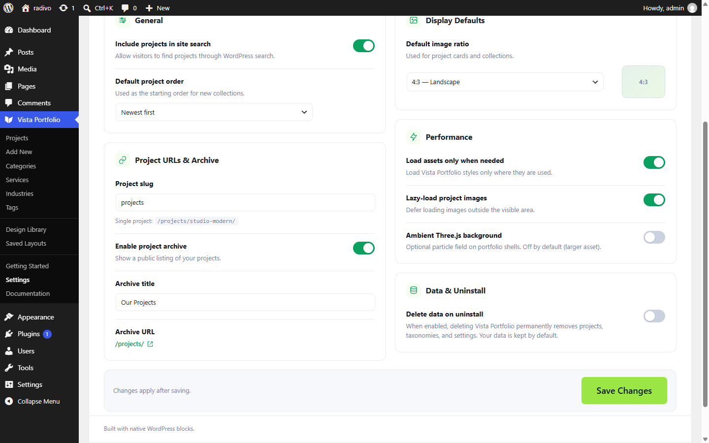

Display Defaults
Display Defaults sets the default image ratio used by project cards in collections.

- Options:
1:1,4:3,3:2,16:9,3:4,auto. - Individual blocks can still override presentation where the block UI allows.
Display Defaults sets the default image ratio used by project cards in collections.

1:1, 4:3, 3:2, 16:9, 3:4, auto.